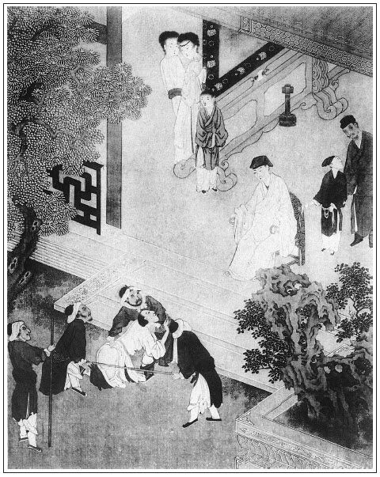

張回此回單為書僮出色描寫也。故上半篇用金蓮怒罵中襯出，下半篇用伯爵笑話中點醒也。
伯爵者，乃作者點睛之筆也。看他於此回內，描寫為書僮一篇，曲曲折折文字，只用伯爵一笑話明白說出，使通身皆現。諸如後文「山洞戲春嬌」，西門惱桂姐心事，用伯爵數白話點明，如此等類，不可勝數。故雲伯爵，作者點睛之妙筆，遂成伯爵之妙舌也。
平安吃醋，固宜受禍，畫童以聽覷搖手，亦被牽連。內又插來安過舌，來興作耍，賁四插科，終以玳安作收，固為書僮怙寵作襯，實又借此為玳安一描身份也。席間必用伯爵打賁四一錯，一者見伯爵薦人純是貪利，於西門家毫未著意，小人心意，固是如此；二者見賁四一向賺錢，已露驕矜，宜乎有錯，而王六兒即便上手，較之賁四嫂尚俟遲遲，故賁四先須讓韓道國一著也。
希大一唱內於賞男寵時，已露王六兒消息，此所以為希大也。然唱亦精絕。
末又於打燈籠一段閒情，照出金蓮之恨，且收拾諸僕。借問棋童使盞童、琴童、玳安、平安，色色皆出，而獨於問春梅時，一語結出書僮，使層層爆出之花，又層層收攏入來，真千古的史筆。可惜令之老死床下；作稗官野史。悲夫！我當為之一哭。
詩曰：
娟娟遊冶童，結束類妖姬。
揚歌倚箏瑟，艷舞逞媚姿。
貴人一蠱惑，飛騎爭相追。
婉孌邀恩寵，百態隨所施。

話說西門慶早到衙門，先退廳與夏提刑說：「車淡四人再三尋人情來說，交將就他。」夏提刑道：「也有人到學生那邊，不好對長官說。既是這等，如今提出來，戒飭他一番，放了罷。」西門慶道：「長官見得有理。」即升廳，令左右提出車淡等犯人跪下。生怕又打，只顧磕頭。西門慶也不等夏提刑開言，就道：「我把你這起光棍，如何尋這許多人情來說！張夾豈是官口中話。本當都送問，且饒你這遭，若再犯了我手裡，都活監死。出去罷！」連韓二都喝出來了，往外金命水命，走投無命。這裡處斷公事不題。
且說應伯爵拿著五兩銀子，尋書僮兒問他討話，悄悄遞與他銀子。書僮接的袖了。那平安兒在門首拿眼兒睃著他。張旁細。書僮於是如此這般：「昨日我替爹說了，今日往衙門裡發落去了。」伯爵道：「他四個父兄再三說，恐怕又責罰他。」書僮道：「你老人家只顧放心去，管情兒一下不打他。」那伯爵得了這消息，急急走去，回他們話去了。到早飯時分，四家人都到家，個個撲著父兄家屬放聲大哭。每人去了百十兩銀子，落了兩腿瘡，再不敢妄生事了。繡旁還是好人。正是：
禍患每從勉強得，煩惱皆因不忍生。
卻說那日西門慶未來家時，書僮兒在書房內，叫來安兒掃地，向食盒內，把人家送的桌面上響糖與他吃。繡旁都是為嘴起，妙。張旁也是吃嘴上起。那小廝千不合萬不合，叫：「書僮哥，我有句話兒告你說。昨日俺平安哥接五娘轎子，在路上好不學舌，說哥的過犯。」書僮問道：「他說我甚麼來？」來安兒道：「他說哥攬的人家幾兩銀子，大膽買了酒肉，送在六娘房裡，吃了半日出來。又在前邊鋪子裡吃，不與他吃。繡旁禍根。又說你在書房裡，和爹幹什麼營生。」這書僮聽了，暗記在心，也不題起。到次日，西門慶早晨約會了，不往衙門裡去，都往門外永福寺，置酒與須坐營送行去了。直到下午才來家，下馬就分咐平安：「但有人來，只說還沒來家。」說畢，進到廳上，書僮兒接了衣裳。西門慶因問：「今日沒人來？」書僮道：「沒有。管屯的徐老爹送了兩包螃蟹、十斤鮮魚。小的拿回帖打發去了，與了來人一錢銀子。又有吳大舅送了六個帖兒，明日請娘們吃三日。」原來吳大舅子吳舜臣，娶了喬大戶娘子侄女兒鄭三姐做媳婦兒，西門慶送了茶去，他那裡來請。
西門慶到後邊，月娘拿了帖兒與他瞧，西門慶說道：「明日你們都收拾了去。」說畢，出來到書房裡坐下。書僮連忙拿炭火爐內燒甜香餅兒，雙手遞茶上去。繡旁趣人。西門慶擎茶在手。他慢慢挨近站立在桌邊。繡旁可意。良久，西門慶努了個嘴兒，使他把門關上，用手摟在懷裡，一手捧著他的臉兒。西門慶吐舌頭，那小郎口裡噙著鳳香餅兒遞與他，下邊又替他弄玉莖。西門慶問道：「我兒，外邊沒人欺負你？」那小廝乘機就說：「小的有樁事，不是爹問，小的不敢說。」西門慶道：「你說不妨。」書僮就把平安一節告說一遍：「前日爹叫小的在屋裡，他和畫童在窗外聽覷，張夾冤呼畫童。小的出來舀水與爹洗手，親自看見。他又在外邊對著人罵小的蠻奴才，百般欺負小的。」西門慶聽了，心中大怒，說道：「我若不把奴才腿卸下來也不算！」這裡書房中說話不題。
且說平安兒專一打聽這件事，三不知走去報與金蓮。張夾原該報。金蓮使春梅前邊來請西門慶說話。剛轉過松牆，只見畫童兒在那裡弄松虎兒，繡眉寫出稚子神情。便道：「姐來做什麼？爹在書房裡。」被春梅頭上鑿了一下。張旁寫生。西門慶在裡面聽見裙子響，就知有人來，連忙推開小廝，走在床上睡著。那書僮在桌上弄筆硯，春梅推門進來，見了西門慶，咂嘴兒張旁寫生。說道：「你們悄悄的在屋裡，把門兒關著，敢守親哩！娘請你說話。」西門慶仰睡在枕頭上，便道：「小油嘴兒，他請我說什麼話？你先行，等我略倘倘兒就去！」張旁摹神。那春梅那裡容他，說道：「你不去，我就拉起你來！」張旁恃寵處。西門慶怎禁他死拉活拉，拉到金蓮房中。金蓮問：「他在前頭做什麼？」春梅道：「他和小廝兩個在書房裡，把門兒插著，捏殺蠅兒子是的，知道干的甚麼繭兒，恰是守親的一般。我進去，小廝在桌子跟前推寫字，他便倘剌在床上，拉著再不肯來。」潘金蓮道：「他進來我這屋裡，只怕有鍋鑊吃了他是的。繡旁應是皮的。張夾心醋瓶兒。賊沒廉恥的貨，你想，有個廉恥，大白日和那奴才平白關著門做什麼來？左右是奴才臭屁股門子，鑽了，到晚夕還進屋裡，和俺每沾身睡，好乾淨兒！」繡眉將就。張旁卿何妨自潔。西門慶道：「你信小油嘴兒胡說，我那裡有此勾當！我看著他寫禮帖兒來，我便𢱉在床上。」金蓮道：「巴巴的關著門兒寫禮帖？什麼機密謠言，什麼三隻腿的金剛、兩個𧤀角的象，繡旁出口便是一串，妙。怕人瞧見？明日吳大妗子家做三日，掠了個帖子兒來，不長不短的，也尋件甚麼子與我做拜錢。你不與，莫不教我和野漢子要！張旁活相逼人。大姐姐是一套衣裳、五錢銀子，別人也有簪子的，也有花的。只我沒有，我就不去了！」西門慶道：「前邊廚櫃內拿一疋紅紗來，與你做拜錢罷。」金蓮道，「我就去不成，也不要那囂紗片子，拿出去倒沒的教人笑話！」西門慶道：「你休亂，等我往那邊樓上，尋一件什麼與他便了。如今往東京送賀禮，也要幾疋尺頭，一答兒尋下來罷。」於是走到李瓶兒那邊樓上，尋了兩疋玄色織金麒麟補子尺頭、兩個南京色緞、一疋大紅鬥牛紵絲、一疋翠藍雲緞。因對李瓶兒說：「要尋一件雲絹衫與金蓮做拜錢，如無，拿帖緞子鋪討去罷。」張夾帶慚，妙。李瓶兒道：「你不要鋪子裡取去，我有一件織金雲絹衣服哩！大紅衫兒、藍裙，留下一件也不中用，俺兩個都做了拜錢罷。」一面向箱中取出來。李瓶兒親自拿與金蓮瞧：「隨姐姐揀，衫兒也得，裙兒也得，咱兩個一事包了做拜錢倒好，省得又取去。」金蓮道：「你的，我怎好要？」李瓶兒道：「好姐姐，怎生恁說話！」推了半日，金蓮方才肯了。又出去教陳敬濟換了腰封，寫了二人名字在上，不題。
且說平安兒正在大門首，只見白賚光走來問道：「大官人在家麼？」張旁百忙平插一峰，卻是二兄弟處生來，非生扭強捏。平安兒道：「俺爹不在家了。」那白賚光不信，逕入裡面廳上，繡旁老到。見隔子關著，說道：「果然不在家。往那裡去了？」平安道：「今日門外送行去了，還沒來。」白賚光道：「既是送行，這咱晚也該來家了。」平安道：「白大叔有甚話說下，待爹來家，小的稟就是了。」白賚光道：「沒什麼活，只是許多時沒見，閒來望望。既不在，我等等罷。」繡旁更老到。平安道：「只怕來晚了，你老人家等不得。」白賚光不依，把隔子推開，進入廳內，在椅子上就坐了。眾小廝也不理他，由他坐去。不想天假其便，西門慶教迎春抱著尺頭，從後邊走來，剛轉過軟壁，頂頭就撞見白賚光在廳上坐著。迎春兒丟下緞子，往後走不迭。白賚光道：「這不是哥在家！」一面走下來唱喏。西門慶見了，推辭不得，須索讓坐。睃見張旁二字不堪。白賚光頭戴著一頂出洗覆盔過的、恰如太山游到嶺的舊羅帽兒，繡眉畫出。身穿著一件壞領磨襟救火的硬漿白布衫，張旁必如此寫來，見世人所敬者衣服也。可歎！腳下靸著一雙乍板唱曲兒前後彎絕戶綻的皂靴，繡眉可憐。裡邊插著一雙一碌子蠅子打不到、黃絲轉香馬凳襪子。坐下，也不叫茶，張夾十弟兄如此。見琴童在旁伺候，就吩咐：「把尺頭抱到客房裡，教你姐夫封去。」那琴童應諾，抱尺頭往廂房裡去了。白賚光舉手道：「一向欠情，沒來望的哥。」西門慶道：「多謝掛意。我也常不在家，日逐衙門中有事。」張夾十弟兄如此。白賚光道：「哥這衙門中也日日去麼？」西門慶道：「日日去兩次，每日坐廳問事。到朔望日子，還要拜牌，畫公座，大發放，地方保甲番役打卯。歸家便有許多窮冗，無片時閒暇。今日門外去，因須南溪新升了新平寨坐營，眾人和他送行，只剛到家。張夾一虛。明日管皇莊薛公公家請吃酒，路遠去不成。張夾一虛。後日又要打聽接新巡按。張夾一實。又是東京太師老爺四公子又選了駙馬，張夾一虛。童太尉侄男童天㣧新選上大堂，升指揮使僉書管事。張夾一虛。兩三層都要賀禮。這連日通辛苦的了不得。」說了半日語，來安兒才拿上茶來。白賁光才拿在手裡呷了一口，只見玳安拿著大紅帖兒往裡飛跑，報道：「掌刑的夏老爹來了！外邊下馬了。」西門慶就往後邊穿衣服去了。張旁絕不照管。白賁光躲在西廂房內，打簾裡望外張看。
良久，夏提刑進到廳上，西門慶冠帶從後邊迎將來。兩個敘禮畢，分賓主坐下。不一時，棋童兒拿了兩盞茶來吃了。張旁明襯賚光，可歎，可歎！夏提刑道：「昨日所言接大巡的事，今日學生差人打聽，姓曾，乙未進士，牌已行到東昌地方。他列位每都明日起身遠接。你我雖是武官，系領敕衙門提點刑獄，比軍衛有司不同。咱後日起身，離城十里尋個去所，預備一頓飯，那裡接見罷！」繡眉因後被參，先敘得疏虞，妙。西門慶道：「長官所言甚妙，也不消長官費心，學生這裡著人尋個庵觀寺院，或是人家莊園亦好，教個廚役早去整理。」夏提刑謝道：「這等又教長官費心。」說畢，又吃了一道茶，張旁可歎。夏提刑起身去了。西門慶送了進來，寬去衣裳。那白賁光還不去，走到廳上又坐下了。對西門慶說：「自從哥這兩個月沒往會裡去，把會來就散了。張旁此處提「熱結」，偏冷淡無比。張夾可憐十弟兄如此冷去。老孫雖年紀大，主不得事。應二哥又不管。昨日七月內，玉皇廟打中元醮，連我只三四個人到，沒個人拿出錢來，都打撒手兒。繡眉的真扯淡。落運人語言無味者，如此。難為吳道官，晚夕謝將，又叫了個說書的，甚是破費他。他雖故不言語，各人心上不安。不如那咱哥做會首時，還有個張主。不久還要請哥上會去。」西門慶道：「你沒的說散便散了罷，那裡得工夫幹此事？張夾人情如畫。遇閒時，在吳先生那裡一年打上個醮，答報答報天地就是了。隨你們會不會，不消來對我說。」幾句話搶白的白賚光沒言語了。又坐了一回，西門慶見他不去，只得喚琴童兒廂房內放桌兒，拿了四碟小菜，牽葷連素，一碟煎麵筋、一碟燒肉。繡眉吃物數種，寫世炎涼惡態，使人欲涕欲笑。西門慶陪他吃了飯。篩酒上來，西門慶又討副銀鑲大鐘來，斟與他。吃了幾鐘，張旁催起身。白賚光才起身。西門慶送到二門首，說道：「你休怪我不送你，我戴著小帽，不好出去得。」那白賚光告辭去了。
西門慶回到廳上，拉了把椅子坐下，就一片聲叫平安兒。那平安兒走到跟前，西門慶罵道：「賊奴才，還站著？」叫答應的，就是三四個排軍在旁伺候。那平安不知甚麼緣故，諕的臉蠟查黃，跪下了。西門慶道：「我進門就吩咐你，但有人來，答應不在。你如何不聽？」平安道：「白大叔來時，小的回說爹往門外送行去了，沒來家。他不信，強著進來了。小的就跟進來問他：『有話說下，待爹來家，小的稟就是了。』他又不言語，自家推開廳上隔子坐下。落後，不想出來就撞見了。」西門慶罵道：「你這奴才，不要說嘴！你好小膽子兒？人進來，你在那裡耍錢吃酒去來，不在大門首守著！」令左右：「你聞他口裡。」那排軍聞了一聞，稟道：「沒酒氣。」西門慶吩咐：「叫兩個會動刑的上來，與我著實拶這奴才！」當下兩個伏侍一個，套上拶指，只顧擎起來。拶的平安疼痛難忍，叫道：「小的委實回爹不在，他強著進來。」那排軍拶上，把繩子綰住，跪下稟道：「拶上了。」西門慶道：「再與我敲五十敲。」旁邊數著，敲到五十上住了手。西門慶吩咐：「打二十棍！」須臾打了二十，打的皮開肉綻，滿腿血淋。西門慶喝令：「與我放了。」兩個排軍向前解了拶子，解的直聲呼喚。張夾忍心哉！西門慶罵道：「我把你這賊奴才！你說你在大門首，想說要人家錢兒，在外邊壞我的事，休吹到我耳朵內，把你這奴才腿卸下來！」那平安磕了頭起來，提著褲子往外去了。西門慶看見畫童兒在旁邊，說道：「把這小奴才拿下去，也拶他一拶子。」一面拶的小廝殺豬兒似怪叫。張夾小人得志乃如此。這裡西門慶在前廳拶人不題。
單說潘金蓮從房裡出來往後走，剛走到大廳後儀門首，只見孟玉樓獨自一個在軟壁後聽覷。張旁此處先插玉樓，章法一變。金蓮便問：「你在此聽甚麼兒哩？」玉樓道：「我在這裡聽他爹打平安兒，連畫童小奴才也拶了一拶子，不知為什麼。」一回棋童兒過來，玉樓叫住問他：「為什麼打平安兒？」棋童道：「爹嗔他放進白賚光來了。」金蓮接過來道：「也不是為放進白賚光來，敢是為他打了象牙來，張旁明點牙梳。不是打了象牙，平白為什麼打得小廝這樣的！賊沒廉恥的貨，亦發臉做了主了。想有些廉恥兒也怎的！」張夾卻亦恰當。那棋童就走了。玉樓便問金蓮：「怎的打了象牙？」金蓮道：「我要告訴你，還沒告訴你。我前日去俺媽家做生日去了，不在家，蠻秫秫小廝攬了人家說事幾兩銀子，買兩盒嗄飯，又是一壇金華酒，掇到李瓶兒房裡，和小廝吃了半日酒，小廝才出來。沒廉恥貨來家，也不言語，還和小廝在花園書房裡，插著門兒，兩個不知幹著什麼營生。平安這小廝拿著人家帖子進去，見門關著，就在窗下站著了。蠻小廝開門看見了，想是學與賊沒廉恥的貨，今日挾仇打這小廝，打的膫子成。那怕蠻奴才張旁似與己賭氣者。到明日把一家子都收拾了，張旁金蓮亦必在內。管人吊腳兒事！」玉樓笑道：「好說，雖是一家子，有賢有愚，繡旁自己也在裡頭。莫不都心邪了罷？」張旁明誚金蓮。金蓮道：「不是這般說，等我告訴你。如今這家中，他心肝肐蒂兒偏歡喜的只兩個人，一個在裡，一個在外，成日把魂恰似落在他身上一般，見了說也有，笑也有。俺們是沒時運的，行動就是烏眼雞一般。張夾每語必插自己。賊不逢好死變心的強盜！通把心狐迷住了，更變的如今相他哩！三姐你聽著，到明日弄出什麼八怪七喇出來！今日為拜錢，又和他合了回氣。張旁活跳出紙上。但來家，就在書房裡。今日我使春梅叫他來，誰知大白日裡和賊蠻奴才關著門兒哩！春梅推門入去，諕的一個個眼張失道的。繡眉如見。到屋裡，教我盡力數罵了幾句。他只顧左遮右掩的。先拿一疋紅紗與我做拜錢，我不要。落後往李瓶兒那邊樓上尋去。賊人膽兒虛，自知理虧，拿了他箱內一套織金衣服來，親自來盡我，我只是不要。他慌了，說：『姐姐，怎的這般計較！姐姐揀衫兒也得，裙兒也得。看了，好拿到前邊，教陳姐夫封寫去。』盡了半日，我才吐了口兒。張旁真有此等利口，可恨，可恨！他讓我要了衫子。」張夾我願世世不見此等人。玉樓道：「這也罷了，也是他的盡讓之情。」金蓮道：「你不知道，不要讓了他。如今年世，只怕睜著眼兒的金剛，不怕閉著眼兒的佛！老婆漢子，你若放些松兒與他，『王兵馬的皂隸──還把你不當㒲的』。」張夾是平時失寵語，是一時得意話。玉樓戲道，「六丫頭，你是屬麵筋的，倒且是有靳道。」說著，兩個笑了。只見小玉來請：「三娘、五娘，後邊吃螃蟹哩！我去請六娘和大姑娘去。」
兩個手拉著手兒進來，月娘和李嬌兒正在上房穿廊下坐，說道：「你兩個笑什麼？」金蓮道：「我笑他爹打平安兒。」月娘道：「嗔他恁亂蝍䗫叫喊的，只道打什麼人？原來打他。為什麼來，」金蓮道：「為他打折了象牙了。」月娘老實，便問「象牙放在那裡來，怎的教他打折了？」那潘金蓮和孟玉樓兩個嘻嘻哈哈，只顧笑成一塊。月娘道：「不知你每笑什麼，不對我說。」玉樓道：「姐姐你不知道，爹打平安為放進白賚光來了。」月娘道：「放進白賚光便罷了，怎麼說道打了象牙？也沒見這般沒稍乾的人，在家閉著膫子坐，張夾豈賢婦人話！平白有要沒緊來人家撞些什麼！」來安道：「他來望爹來了。」月娘道：「那個掉下炕來了？望，沒的扯臊淡，不說來抹嘴吃罷了。」良久，李瓶兒和大姐來到，眾人圍繞吃螃蟹。月娘吩咐小玉：「屋裡還有些葡萄酒，篩來與你娘每吃。」金蓮快嘴，說道：「吃螃蟹得些金華酒吃才好！」又道：「只剛一味螃蟹就著酒吃，得只燒鴨兒撕了來下酒。」張夾金蓮取死，在此等尖處。月娘道：「這咱晚那裡買燒鴨子去！」李瓶兒聽了，把臉飛紅了。
正是：
話頭兒包含著深意，題目兒哩暗蓄著留心。
那月娘是個誠實的人，怎曉的話中之話。這裡吃螃蟹不題。
且說平安兒被責，來到外邊，賁四、來興眾人都亂來問平安兒：「爹為甚麼打你？」平安哭道：「我知為甚麼！」來興兒道：「爹嗔他放進白賚光來了。」平安道，「早是頭裡你看著，我那等攔他，他只強著進去了。不想爹從後邊出來撞見了，又沒甚話，吃了茶，再不起身。只見夏老爹來了，我說他去了，他還躲在廂房裡又不去。直等拿酒來吃了才去。倒惹的打我這一頓，你說我不造化低！我沒攔他？又說我沒攔他。他強自進來，管我腿事！打我！教那個賊天殺男盜女娼的狗骨禿，吃了俺家這東西，打背樑脊下過！」來興兒道：「爛折脊樑骨，倒好了他往下撞！」平安道：「教他生噎食病，把顙根軸子爛掉了。天下有沒廉恥皮臉的，不像這狗骨禿沒廉恥，來我家闖的狗也不咬。賊雌飯吃花子㒲的，再不爛了賊忘八的屁股門子！」來興笑道：「爛了屁股門子，人不知道，只說是臊的。」眾人都笑了。平安道：「想必是家裡沒晚米做飯，老婆不知餓的怎麼樣的。閒的沒的幹，來人家抹嘴吃。圖家裡省了一頓，也不是常法兒。不如教老婆養漢，做了忘八倒硬朗些，不教下人唾罵。」玳安在鋪子裡篦頭，篦了，打發那人錢去了，走出來說：「平安兒，我不言語，憋的我慌。張旁可畏！可畏！虧你還答應主子，當家的性格，你還不知道？你怎怪人？常言養兒不要屙金溺銀，只要見景生情。比不的應二叔和謝叔來，答應在家不在家，他彼此都是心甜厚間便罷了。以下的人，他又吩咐你答應不在家，你怎的放人來？不打你卻打誰！」張夾總為玳安出色，與春梅一樣。賁四戲道：「平安兒從新做了小孩兒，才學閒閒，他又會頑，成日只踢毬兒耍子。」眾人又笑了一回。賁四道：「他便為放人進來，這畫童兒卻為什麼，也陪拶了一拶子？是甚好吃的果子，陪吃個兒？吃酒吃肉也有個陪客，十個指頭套在拶子上，也有個陪的來？」那畫童兒揉著手，只是哭。玳安戲道：「我兒少哭，你娘養的你忒嬌，把散子兒拿繩兒拴在你手兒上，你還不吃？」這裡前邊小廝熱亂不題。
西門慶在廂房中，看著陳敬濟封了禮物尺頭，寫了揭帖，次日早打發人上東京，張夾一語接入，無痕。送蔡駙馬、童堂上禮，不在話下。到次日，西門慶往衙門裡去了。吳月娘與眾房，共五頂轎子，頭戴珠翠，身穿錦繡，來興媳婦一頂小轎跟隨，往吳大妗家做三日去了。止留下孫雪娥在家中，和西門大姐看家。早間韓道國送禮相謝：一壇金華酒，一隻水晶鵝，一副蹄子，四隻燒鴨，四尾鰣魚。帖子上寫著「晚生韓道國頓首拜」。書僮因沒人在家，不敢收，連盒擔留下，待的西門慶衙門回來，拿與西門慶瞧。西門慶使琴童兒鋪子裡旋叫了韓夥計來，甚是說他：「沒分曉，又買這禮來做甚麼！我決然不受！」那韓道國拜說：「小人蒙老爹莫大之恩，可憐見與小人出了氣，小人舉家感激不盡。無甚微物，表一點窮心。望乞老爹好歹笑納。」西門慶道：「這個使不得。你是我門下夥計，如同一家，我如何受你的禮！即令原人與我抬回去。」韓道國慌了，央說了半日。西門慶吩咐左右，只受了鵝酒，別的禮都令抬回去了。教小廝拿帖兒，請應二爹和謝爹去，對韓道國說：「你後晌叫來保看著鋪子，你來坐坐。」韓道國說：「禮物不受，又教老爹費心。」應諾去了。
西門慶又添買了許多菜蔬，後晌時分，在翡翠軒卷棚內，放下一張八仙桌兒。應伯爵、謝希大先到了。西門慶告他說：「韓夥計費心，買禮來謝我，我再三不受他，他只顧死活央告，只留了他鵝酒。我怎好獨享，請你二位陪他坐坐。」伯爵道：「他和我討較來，要買禮謝。我說你大官府那裡稀罕你的，休要費心，你就送去，他決然不受。如何？我恰似打你肚子裡鑽過一遭的，果然不受他的。」說畢，吃了茶，兩個打雙陸。不一時，韓道國到了，二人敘禮畢坐下。應伯爵、謝希大居上，西門慶關席，韓道國打橫。登時四盤四碗拿來，桌上擺了許多下飯，把金華酒分咐來安兒就在旁邊打開，用銅甑兒篩熱了拿來，教書僮斟酒。伯爵吩咐書僮兒：「後邊對你大娘房裡說，怎的不拿出螃蟹來與應二爹吃？你去說我要螃蟹吃哩。」西門慶道：「傻狗才，那裡有一個螃蟹！實和你說，管屯的徐大人送了我兩包螃蟹，到如今娘們都吃了，剩下醃了幾個。」吩咐小廝：「把醃螃蟹𢵞幾個來。今日娘們都往吳妗子家做三日去了。」不一時，畫童拿了兩盤子醃蟹上來。那應伯爵和謝希大兩個搶著，吃的淨光。因見書僮兒斟酒，說道：「你應二爹一生不吃啞酒，自誇你會唱的南曲，我不曾聽見。今日你好歹唱個兒，我才吃這鍾酒。」那書僮才待拍著手唱，伯爵道：「這等唱一萬個也不算。你裝龍似龍，裝虎似虎，下邊搽畫裝扮起來，像個旦兒的模樣才好。」繡眉伯爵差排指勒處，節節多端，然而正中主人之好，此其所以莫逆也。張夾總是奉承，卻能因時致宜。故妙。那書僮在席上，把眼只看西門慶的聲色兒。西門慶笑罵伯爵：「你這狗才，專一歪廝纏人！」因向書僮道：「既是他索落你，教玳安兒前邊問你姐要了衣服，下邊妝扮了來。」玳安先走到前邊金蓮房裡問春梅要，春梅不與。旋往後問上房玉蕭要了四根銀簪子，一個梳背兒，張夾又雙關點題。面前一件仙子兒，一雙金鑲假青石頭墜子，大紅對衿絹衫兒，綠重絹裙子，紫銷金箍兒。要了些脂粉，在書房裡搽抹起來，儼然就如個女子，打扮的甚是嬌娜。走在席邊，雙手先遞上一杯與應伯爵，頓開喉音，在旁唱《玉芙蓉》道：
殘紅水上飄，梅子枝頭小。這些時，眉兒淡了誰描？因春帶得愁來到，春去緣何愁未消？人別後，山遙水遙。我為你數歸期，畫損了掠兒稍。張夾已寓逃走消息，然又道出本意。
伯爵聽了，誇獎不已，說道：「像這大官兒，不在了與他碗飯吃。你看他這喉音，就是一管蕭。說那院裡小娘兒便怎的，那些唱都聽熟了。怎生如他這等滋潤！哥，不是俺們面獎，似你這般的人兒在你身邊，你不喜歡！」西門慶笑了。怕爵道：「哥，你怎的笑？我到說的正經話。繡眉說得正正經經，何等侃鑿。你休虧這孩子，凡事衣類兒上，另著個眼兒看他。難為李大人送了他來，也是他的盛情。」西門慶道：「正是。如今我不在家，書房中一應大小事，都是他和小婿。小婿又要鋪子裡兼看看。」應伯爵飲過，又斟雙杯。伯爵道：「你替我吃些兒。」書僮道：「小的不敢吃，不會吃。」張夾妙語。伯爵道：「你不吃，我就惱了。我賞你待怎的？」書僮只顧把眼看西門慶。西門慶道：「也罷，應二爹賞你，你吃了。」那小廝打了個僉兒，慢慢低垂粉頸，呷了一口。餘下半鍾殘酒，用手擎著，與伯爵吃了。方才轉過身來，遞謝希大酒，又唱了個曲兒。謝希大問西門慶道：「哥，書官兒青春多少？」西門慶道：「他今年才交十六歲。」問道：「你也會多少南曲？」書僮道：「小的也記不多幾個曲子，胡亂答應爹們罷了。」希大道：「好個乖覺孩子！」亦照前遞了酒。下來遞韓道國。道國道：「老爹在上，小的怎敢欺心。」西門慶道：「今日你是客。」韓道國道：「那有此理！還是從老爹上來，次後才是小人吃酒。」書僮下席來遞西門慶酒，又唱了一個曲兒。西門慶吃畢，到韓道國跟前。韓道國慌忙立起身來接酒。伯爵道：「你坐著，教他好唱。」韓道國方才坐下。書僮又唱了個曲兒。韓道國未等詞終，連忙一飲而盡。
正飲酒中間，只見玳安來說：「賁四叔來了，請爹說話。」西門慶道：「你叫他來這裡說罷。」不一時，賁四進來，向前作了揖，旁邊安頓坐了。玳安又取一雙鍾箸放下。西門慶令玳安後邊取菜蔬。西門慶因問他：「莊子上收拾怎的樣了？」賁四道：「前一層才蓋瓦，後邊卷棚昨日才打的基，還有兩邊廂房與後一層住房的料，都沒有。客位與卷棚漫地尺二方磚，還得五百，那舊的都使不得。砌牆的大城角也沒了。墊地腳帶山子上土，也添夠了百多車子。灰還得二十兩銀子的。」西門慶道：「那灰不打緊，我明日衙門裡吩咐灰戶，教他送去。昨日你磚廠劉公公說送我些磚兒。你開個數兒，封幾兩銀子送與他，須是一半人情兒回去。只少這木植。」賁四道：「昨日老爹吩咐，門外看那莊子，今早同張安兒去看，原來是向皇親家莊子。大皇親沒了，如今向五要賣神路明堂。咱們不要他的，講過只拆他三間廳、六間廂房、一層群房就夠了。他口氣要五百兩。到跟前拿銀子和他講，三百五十兩上，也該拆他的。張夾已方蓋造卻有拆賣者，可歎。休說木料，光磚瓦連土也值一二百兩銀子。」應伯爵道：「我道是誰來！是向五的那莊子。向五被人爭地土，告在屯田兵備道，打官司使了好多銀子。又在院裡包著羅存兒。如今手裡弄的沒錢了。你若要，與他三百兩銀子，他也罷了。冷手撾不著熱饅頭。」西門慶吩咐賁四：「你明日拿兩錠大銀子，同張安兒和他講去，若三百兩銀子肯，拆了來罷。」賁四道：「小人理會。」良久，後邊拿了一碗湯、一盤蒸餅上來，賁四吃了。斟上，陪眾人吃酒。書僮唱了一遍，下去了。
應伯爵道：「這等吃的酒沒趣。取個骰盆兒，俺們行個令兒吃才好。」西門慶令玳安：「就在前邊六娘屋裡取個骰盆來。」張夾映瓶兒好酒。不一時，玳安取了來，放在伯爵跟前，悄悄走到西門慶耳邊說：「六娘房裡哥哭哩。迎春姐叫爹著個人兒接接六娘去。」西門慶道：「你放下壺，快叫個小廝拿燈籠接去！」張旁與前接金蓮冷熱特照。因問：「那兩個小廝在那裡？」玳安道：「琴童與棋童兒先拿兩個燈籠接去了。」張夾挽回寵處，刺金蓮門外一回。伯爵見盆內放著六個骰兒，即用手拈著一個，說：「我擲著點兒，各人要骨牌名一句兒，見合著點數兒，如說不過來，罰一大杯酒。下家唱曲兒，不會唱曲兒說笑話兒，兩樁兒不會，定罰一大杯。」西門慶道：「怪狗才，忒韶刀了！」伯爵道：「令官放個屁，也欽此欽遵。你管我怎的！」叫來安：「你且先斟一杯，罰了爹，然後好行令。」西門慶笑而飲之。伯爵道：「眾人聽著，我起令了！說差了也罰一杯。」說道：「張生醉倒在西廂。張旁酒。吃了多少酒？一大壺，兩小壺，」果然是個麼。西門慶叫書僮兒上來斟酒，該下家謝希大唱。希大拍著手兒道：「我唱個《折桂令》兒你聽罷。」唱道：
可人心二八嬌娃，百件風流，所事撐達。眉蹙春山，眼橫秋水，鬢綰著烏鴉。干相思，撇不下一時半霎；咫尺間，如隔著海角天涯。瘦也因他，病也因他。誰與做個成就了姻緣，便是那救苦難的菩薩。張夾已為王六兒作線。
伯爵吃了酒，過盆與謝希大擲，輪著西門慶唱。謝希大拿過骰兒來說：「多謝紅兒扶上床。張旁色。甚麼時候？三更四點。」可是作怪，擲出個四來。伯爵道：「謝子純該吃四杯。」希大道：「折兩杯罷，我吃不得。」書僮兒滿斟了兩杯，先吃了頭一杯，等他唱。席上伯爵二人把一碟子荸薺都吃了。西門慶道：「我不會唱，說個笑話兒罷。」說道：「一個人到果子鋪問：「可有榧子麼？」那人說有。取來看，那買果子的不住的往口裡放。賣果子的說：『你不買，如何只顧吃？』那人道：『我圖他潤肺。』那賣的說：『你便潤了肺，我卻心疼。』」眾人都笑了。伯爵道：「你若心疼，再拿兩碟子來。我『媒人婆拾馬糞──越發越曬』。」繡眉妙。張夾認的妙。謝希大吃了。第三該西門慶擲。說：「留下金釵與表記。張旁財。多少重？五六七錢。」西門慶拈起骰兒來，擲了個五。書僮兒也只斟上兩鍾半酒。謝希大道：「哥大量，也吃兩杯兒，沒這個理。哥吃四鍾罷，只當俺一家孝順一鍾兒。」該韓夥計唱。韓道國讓：「賁四哥年長。」賁四道：「我不會唱，說個笑話兒罷。」張夾不讓便帶驕意。西門慶吃過兩鐘，賁四說道：「一官問姦情事。問：『你當初如何奸他來？』那男子說：『頭朝東，腳也朝東奸來。』官云：『胡說！那裡有個缺著行房的道理！』旁邊一個人走來跪下，說道：『告稟，若缺刑房，待小的補了罷！』」應伯爵道：「好賁四哥，你便益不失當家！你大官府又不老，別的還可說，你怎麼一個行房，你也補他的？」繡眉毒極。張旁明使賁四嫂為王六兒爭寵，夫未有六兒先插五兒，何等筆力！賁四聽見此言，諕的把臉通紅了，說道：「二叔，什麼話！小人出於無心。」伯爵道：「什麼話？檀木靶，沒了刀兒，只有刀鞘兒了。」繡眉惡極。張夾可畏。那賁四在席上終是坐不住，去又不好去，如坐針氈相似。西門慶飲畢四鍾酒，就輪該賁四擲。賁四才待拿起骰子來，只見來安兒來請：「賁四叔，外邊有人尋你。我問他，說是窯上人。」這賁四巴不得要去，聽見這一聲，一個金蟬脫殼走了。西門慶道：「他去了，韓夥計你擲罷。」韓道國舉起骰兒道：「小人遵令了。」說道：「夫人將棒打紅娘。張旁氣。打多少？八九十下。」伯爵道：「該我唱，我不唱罷，我也說個笑話兒。教書僮合席都篩上酒，連你爹也篩上。聽我這個笑話：一個道士，師徒二人往人家送疏。行到施主門首，徒弟把絛兒鬆了些，垂下來。師父說：『你看那樣！倒像沒屁股的。』徒弟回頭答道：『我沒屁股，師父你一日也成不得。』」張夾一語點醒正文。西門慶罵道：「你這歪狗才，狗口裡吐出什麼象牙來！」這裡飲酒不題。
且說玳安先到前邊，又叫了畫童，拿著燈籠，來吳大妗子家接李瓶兒。瓶兒聽見說家裡孩子哭，也等不得上拜，留下拜錢，就要告辭來家。吳大妗、二妗子那裡肯放：「好歹等他兩口兒上了拜兒！」月娘道：「大妗子，你不知道，倒教他家去罷。家裡沒人，孩子好不尋他哭哩！俺每多坐回兒不妨事。」那吳大妗子才放了李瓶兒出門。玳安丟下畫童，和琴童兒兩個隨轎子先來家了。落後，上了拜，堂客散時，月娘等四乘轎子，只打著一個燈籠，況是八月二十四日，月黑時分。月娘問：「別的燈籠在那裡，如何只一個？」棋童道：「小的原拿了兩個來。玳安要了一個，和琴童先跟六娘家去了。」月娘便不問，就罷了。潘金蓮有心，便問棋童：「你們頭裡拿幾個來？」棋童道：「小的和琴童拿了兩個來，落後玳安與畫童又要了一個去，把畫童換下，和琴童先跟了六娘去了。」金蓮道：「玳安那囚根子，他沒拿燈籠來？」繡旁問得精細。畫童道：「我和他又拿了一個燈籠來了。」張旁一路為書僮寫諸小廝，此處又作一小掩映。金蓮道：「既是有一個就罷了，怎的又問你要這個？」棋童道：「我那等說，他強著奪了去。」金蓮便叫吳月娘：「姐姐，你看玳安恁賊獻勤的奴才！等到家和他答話。」月娘道：「奈煩，孩子家裡緊等著，叫他打了去罷了。」繡眉佛。金蓮道：「姐姐，不是這等說。俺便罷了，你是個大娘子，沒些家法兒，張旁可畏。晴天還好，這等月黑，四頂轎子只點著一個燈籠，顧那些兒的是？」
說著轎子到了門首。月娘、李嬌兒便往後邊去了。金蓮和孟玉樓一答兒下轎，進門就問，「玳安兒在那裡？」平安道：「在後邊伺候哩！」剛說著，玳安出來，被金蓮罵了幾句：「我把你獻勤的囚根子！明日你只認清了，單揀著有時運的跟，只休要把腳兒踢踢兒。張旁雖是金蓮閒氣，卻是為諸小廝點染，是此回正文。有一個燈籠打著罷了，信那斜汗世界一般又奪了個來。又把小廝也換了來。他一頂轎子，倒佔了兩個燈籠，俺們四頂轎子，反打著一個燈籠，俺們不是爹的老婆？」玳安道：「娘錯怪小的了。爹見哥兒哭，教小的：『快打燈籠接你六娘先來家罷，恐怕哭壞了哥兒。』莫不爹不使我，我好幹著接去來！」金蓮道：「你這囚根子，不要說嘴！他教你接去，沒教你把燈籠都拿了來。哥哥，你的雀兒只揀旺處飛，休要認差了，冷灶上著一把兒、熱灶上著一把兒才好。俺們天生就是沒時運的來？」玳安道：「娘說的什麼話！小的但有這心，騎馬把脯子骨撞折了！」金蓮道：「你這欺心的囚根子！不要慌，我洗淨眼兒看著你哩！」張旁西門打平安，金蓮罵玳安，遙遙相對。說著，和玉樓往後邊去了。那玳安對著眾人說：「我精晦氣的營生，平自爹使我接去，卻被五娘罵了恁一頓。」
玉樓、金蓮二人到儀門首，撞見來安兒，問：「你爹在那裡哩？」來安道：「爹和應二爹、謝爹、韓大叔還在卷棚內吃酒。書僮哥裝了個唱的，在那裡唱哩，娘每瞧瞧去。」二人間走到卷棚隔子外，往裡觀看。只見應伯爵在上坐著，把帽兒歪挺著，醉的只象線兒提的。張夾不堪冷眼一觀。謝希大醉的把眼兒通睜不開。張夾不堪一觀。書僮便妝扮在旁邊斟酒唱南曲。張夾不堪一觀。西門慶悄悄使琴童兒抹了伯爵一臉粉，張旁書僮、伯爵一樣矣。又拿草圈兒從後邊悄悄兒弄在他頭上作戲。把金蓮和玉樓在外邊忍不住只是笑，罵：「賊囚根子，到明日死了也沒罪了，把丑都出盡了！」西門慶聽見外邊笑，使小廝出來問是誰，二人才往後邊去了。散時，已一更天氣了。西門慶那日往李瓶兒房裡睡去了。金蓮歸房，因問春梅：「李瓶兒來家說甚麼話來？」春梅道：「沒說甚麼。」金蓮又問：「那沒廉恥貨，進他屋裡去來沒有？」春梅道：「六娘來家，爹往他房裡還走了兩遭。」金蓮道：「真個是因孩子哭接他來？」春梅道：「孩子後晌好不怪哭的，抱著也哭，放下也哭，再沒法處。前邊對爹說了，才使小廝接去。」金蓮道：「若是這等也罷了。我說又是沒廉恥的貨，三等兒九般使了接去。」張旁映前自己出門。又問：「書僮那奴才，穿的是誰的衣服？」春梅道：「先來問我要，教我罵了玳安出去。落後，和玉簫借了。」金蓮道：「再要來，休要與秫秫奴才穿。」張夾一語結住書僮一篇文字。說畢，見西門慶不來，使性兒關門睡了。
且說應伯爵見賁四管工，在莊子上賺錢，明日又拿銀子買向五皇親房子，少說也有幾兩銀子背。正行令之間，可可見賁四不防頭，說出這個笑話兒來。伯爵因此錯他這一錯，使他知道。賁四果然害怕，張夾有梳篦，應害怕。次日封了三兩銀子，親到伯爵家磕頭。伯爵反打張驚兒，說道：「我沒曾在你面上盡得心，何故行此事？」賁四道：「小人一向缺禮，早晚只望二叔在老爹面前扶持一二，足感不盡！」伯爵於是把銀子收了，待了一鍾茶，打發賁四出門。拿銀子到房中，與他娘子兒說：「老兒不發狠，婆兒沒布裙。賁四這狗啃的，我舉保他一場，他得了買賣，扒自飯碗兒，就不用著我了。大官人教他在莊子上管工，明日又托他拿銀子成向五家莊子，一向賺的錢也夠了。張夾又明出。我昨日在酒席上，拿言語錯了他錯兒，他慌了，不怕他今日不來求我。送了我三兩銀子，我且買幾疋布，夠孩子們冬衣了。」正是：
只恨閒愁成懊惱，豈知伶俐不如癡。
文回
一
此數回放筆寫西門慶得意，即放筆寫潘金蓮肄刁。得意由於得官，肆刁由於失寵。一處順境，一處逆境，處順境則露（嬌）〔驕〕態，處逆境則生妒心。驕則忘其本來面目，妒則另換一副肝腸，此小人女子之所以難養也。
不仁者不可久處約，〔不可以〕長處樂，職此故也。然則將何以處此等人曰：姦夫淫婦，謀殺本夫，國法一斬一剮，原不可容留於人世。今則此書別開法門，而令其幸逃顯戮，乃竟能逆取順守，改位易轍，斷無此情理。果有今日之善，定無前日之惡；既有前日之惡，必無今日之善。此等人其心已黑，其性已變，其舉止動作，直與狼豺相同，蛇蠍相似。強名之曰人，以其具人之形，而其心性非復人之心性，又安能言人之言，行人之行哉
本非人類，而與之相處之人，遂亦不成人矣。婊子認乾娘，女婿戲丈母，主母與僮僕共飲，小叔同嫂子通姦，直鬧成一個混濁世界。在姦夫淫婦，是其本性，而人亦染其習，甚矣，鳥獸不可與同群！
二
文禹門云：潘金蓮初進門，其為人也，月娘不深知，玉樓固深知之。月娘不能知而愛之，謂其不我毒也，此正是月娘忠厚處。玉樓知之而又親之，欲其為我用也，此正是玉樓乖巧處。迨至此日，月娘漸知金蓮之惡而有悔心，此忠厚人常事，不受其累，不肯回頭也。玉樓見其所結仇者李瓶兒，所深怨者西門慶，一不離於口，一不釋於心，此二人均非玉樓之所欲去者。彼自有事於齊，焉肯為我伐楚乎？其不能為我用也明矣。明知不為我用，而仍指揮之，愚矣，玉樓不爾也。前此之心機妄用，後此之改嫁益堅。試觀此時，與金蓮雖不冰炭，亦不水乳，所答所問，只在有意無意之間，若勸若諷，漸露不瞅不睬之象，玉樓亦能矣哉！
故月娘與玉樓較：月娘之實，不敵玉樓之巧，玉樓之譎，不如月娘之正。作者寫月娘，一則曰，月娘老實，再則曰，那月娘是個誠實的人，皆是直筆也；寫玉樓則若隱若顯，不即不離，全用白描，是在閱者自領會耳，何嘗有褒無貶哉！
若潘金蓮，直是一條瘋狗，遇之者病，遭之者死。不祥之物，避之惟恐不及，引而近之，適以自殺其軀而已矣。
至於西門慶，則勢利薰心，粗俗透骨，昏庸匪類，凶暴小人。外貌似有才能，其實半生盡為人之所使也。取砒霜殺武植，王婆子所使也；下聘誑孟玉樓，薛媒婆所使也；激打孫雪娥，金蓮所使也；剪金蓮發，李桂姐所使也；遞解來旺兒，金蓮所使也；打小鐵棍，亦金蓮所使也。至此伯爵使之放韓搗鬼，瓶兒使之放車淡四人，平安與畫童挨冤枉打，又為書僮所使矣。全無主見，一味凶頑。謂世上無此等人，此等人正自不少。見世上有此等人，此等人又何可學？看《金瓶梅》而色善者，曷弗多置小星乎？讀《金瓶梅》而心驚者，庶幾可無大過矣。
按：前評寫於光緒五年（1879）五月十四日。後評當寫於光緒六年（1880）正月二十一日。